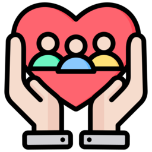

RICONGIUNGIMENTO FAMILIARE
Che cos’è il ricongiungimento familiare?
Lo straniero che possiede il permesso di soggiorno Ue per soggiornanti di lungo periodo o un permesso di soggiorno della durata di almeno 1 anno per lavoro subordinato o autonomo, per studio, asilo, protezione sussidiaria, motivi religiosi o familiari, può chiedere il ricongiungimento familiare con i parenti residenti all’estero.Chi può richiedere il ricongiungimento familiare?
Lo straniero residente in Italia, titolare di carta di soggiorno o di permesso di soggiorno in corso di validità, di durata non inferiore ad un anno, rilasciato per i seguenti motivi:- lavoro subordinato;
- lavoro autonomo;
- asilo politico;
- studio;
- motivi religiosi;
- motivi di famiglia.
Ricongiungimento familiare: i requisiti
Per ottenere il ricongiungimento familiare è necessario soddisfare i seguenti requisiti: disponibilità di un alloggio conforme ai requisiti igienico-sanitari e di idoneità abitativa, accertati dai competenti uffici comunali; reddito minimo annuo che deve derivare da fonti lecite e non deve essere inferiore all’importo annuo dell’assegno sociale, aumentato della metà dell’importo dello stesso per ogni familiare da ricongiungere.I destinatari del ricongiungimento familiare sono i seguenti:
- coniuge (o partner unito civilmente) – non legalmente separato – di età non inferiore ai 18 anni;
- figli minori;
- figli maggiorenni a carico con invalidità totale;
- genitori a carico che non hanno altri figli nel Paese di origine o di provenienza, oppure nel caso di genitori ultrasessantacinquenni, se gli altri figli sono impossibilitati al loro sostentamento per gravi e documentati motivi di salute;
- genitore naturale, se il richiedente è minorenne e regolarmente soggiornante in Italia con l’altro genitore.
Quali sono i documenti per effettuare la domanda di ricongiungimento familiare?
I documenti necessari per effettuare la domanda di ricongiungimento familiare sono:- SPID (se non l'hai ancora attivato, richiedi il servizio SPID Online)
- Fotocopia del permesso di soggiorno- carta d’identita- codice fiscale
- Fotocopia del passaporto tuo e del familiare
- Certificato di famiglia o autocertificazione
- Certificato di vedovanza (solo se il familiare è vedovo) - se over 65 serve l’impegno alla stipulazione della polizza assicurativa
- Idoneità alloggiativa rilasciata dal Comune di residenza
- Documentazione attestante il reddito CUD, 730, Modello Unico
- Modello S2 se sei ospite o affituario e devi ricongiungere un familiare
- Copia contratto di affitto o atto di compravendita dell’alloggio
- Modello S1 se sei ospite e devi ricongiungere solo il figlio minore di 14 anni
- Marca da bollo 16,00€
- Per lavoro subordinato:
- Modello S3 se sei un lavoratore subordinato
- UNILAV comunicazione del lavoro
- Tre ultime buste paga
- Per lavoro autonomo:
- Visura camerale
- Bilancino
- Tessera professionale o documento d’identità del commercialista.